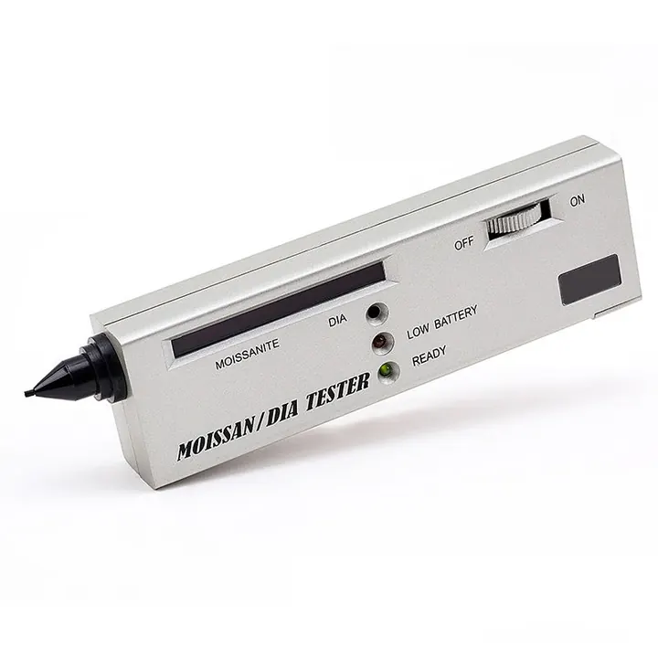

鑑定實驗室與證書：權威的力量
一張權威證書，是寶石世界的「護照」——沒有它，高價交易寸步難行。

核心定義
權威寶石實驗室：GIA（美國寶石學院，鑽石分級與彩寶鑑定）、SSEF（瑞士，高級彩寶與產地）、Gübelin（瑞士，產地與處理）、AGS（美國寶石協會，鑽石切工）、IGI（國際寶石學院）——它們用頂級儀器與專家出具「證書」——寶石身分的權威證明。
證書的內容：寶石種類、4C/品質描述、處理揭露（注油、加熱）、產地鑑定、繪圖（內含物位置圖）、編號與防偽——證書是「寶石的體檢報告＋身分證＋出生證明」的三合一。
特徵與分類
| 實驗室 | 強項 | 代表 |
|---|---|---|
| GIA | 鑽石分級 | 4C 證書 |
| SSEF | 彩寶產地 | 紅藍寶祖母綠 |
| Gübelin | 產地處理 | 高級彩寶 |
| AGS | 鑽石切工 | 切工評級 |
| IGI | 鑽石/彩寶 | 國際通用 |
證書的價值：標準化（全球通用語言）、可信（權威背書）、可追溯（編號查詢）——高價寶石交易（收藏、投資、保險）都以證書為準。無證書的高價寶石，變現與保險都困難。
科學原理
實驗室的設備：UV-Vis 光譜儀（致色與處理）、紅外光譜儀（樹脂油）、拉曼光譜儀（內含物）、LA-ICP-MS（微量元素與產地）、XRF（成分）——頂級儀器讓「產地」與「處理」有科學依據。
產地鑑定的科學：不同產地的寶石有特徵「微量元素組合」與內含物——LA-ICP-MS 分析微量元素指紋（如紅寶的鉻鐵比、祖母綠的釩鉻比）——產地鑑定是「地球化學偵探」。
鑑定與鑑別方法
- 查機構：權威名單（GIA等）
- 查編號：官方網站驗證
- 對實物：證書描述 vs 寶石
- 看防偽：雷射標/浮水印
- 查機構認證：實驗室資質
市場行情與保養建議
行情意義：證書影響價格——同品質寶石，有 GIA/SSEF 證書者價格可高數成；產地鑑定（緬甸紅寶、哥倫比亞祖母綠）更是溢價的關鍵證據。證書是「價值的憑證」。
消費者指南：買高價寶石「先看證書再談價」——認權威機構、上官網查編號、對照實物。證書的真偽查詢，是交易的最後一道保險。
常見誤區
實驗室的儀器、標準與公信力不同——GIA、SSEF、Gübelin 是權威，小機構證書的含金量打折。看「誰發的」，比看「寫什麼」重要。
證書可能偽造、可能與實物不符（調包）——要上官網查編號、對照實物。證書是工具，核對才是關鍵。
冷知識
1950 年代 GIA 建立 4C 分級系統——今日全球鑽石交易的語言，來自一家實驗室的標準。
LA-ICP-MS 用雷射打掉微塵，分析微量元素——一顆寶石的產地，寫在它的「化學指紋」裡。
反直覺觀點
檢測費看似高（數百至數千），但無證書的寶石交易風險（假貨、處理）成本更高——證書是「保險費」，不是「成本」。
頂級實驗室對模糊案例誠實標註「無法確定產地」——權威的來源，是敢於承認不確定性。